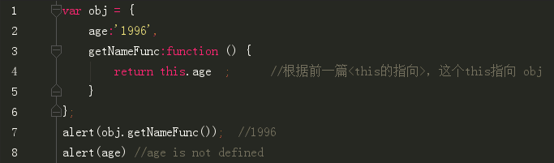

首先，看了个概念,在《JavaScript高级程序设计》中，闭包指的是：
有权访问另一个函数作用域中的变量的函数，创建闭包的常见方式，就是在一个函数内部创建另一个函数
然后呢，我就要自问自答两个问题
1.在对象中定义的方法，能够访问到对象中的变量吗？对象中的变量是私有的吗？
2.对象是否是函数呢？
首先，在对象中定义的方法，能够访问到对象中的变量吗？对象中的变量是私有的吗？
答案是可以！是私有的！
其次，对象是否是函数呢？
函数是一种对象，而对象是通过函数创建的，这个观点来自
深入理解javascript原型和闭包（2）——函数和对象的关系
比如说（对象字面量）
var obj = {
name:'袁佳',
age:'1996',
getNameFunc:function () {
return this.name ;
}
}
多说一句，我个人认为更准确的说法是所有对象的创建都需要通过一个构造函数，虽然通过一个语法糖（即上方我写的代码）可以省略掉构造函数，但构造函数是确实存在的。 构造函数本身也是一个对象，我们可以称之为函数对象，函数对象也可以通过它的构造函数Function()来创建。 JavaScript内置不少函数对象，如Object()、String()、Array()、Function()等，它们既是对象，也可以作为构造函数用来构造其它的对象。 除此之外，我们也可以定义自己的构造函数。
也可以这么写（Object构造函数）
var obj = new Object();
obj.name = '袁佳';
obj.age='1996';
obj.getNameFunc =function () {
return this.name ;
};
最后总结一下，个人认为，对象内的方法形成的闭包，起码是拥有闭包的性质的，而且也具备闭包的优点—— 从外部可以通过这个对象内的方法，得到这个对象中的私有变量。
PS:感觉上应该就是可以形成闭包的吧。。。